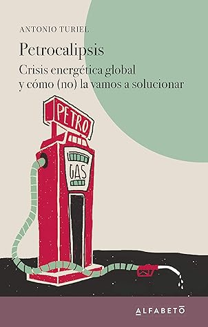

Petrocalipsis: Crisis energética global y cómo (no) la vamos a solucionar
Reseña por Jorge I. Zuluaga

Ver detalles · Ver reseña en GoodReads (necesita cuenta)
“Petrocalipsis” es una colección de ensayos cortos, escritos por el físico español Antonio Turiel, enfocados cada uno en distintas preguntas sobre la problemática energética actual: por qué el petróleo seguirá siendo importante en la economía capitalista a pesar de nuestros esfuerzos por deshacernos de este recurso, por qué este terminará acabándose y qué consecuencias tendrá en la sociedad como la conocemos, por qué las energías renovables, incluso la energía nuclear (de la que soy un defensor acérrimo), no son la solución a un problema que está mal formulado, por qué el ahorro y la eficiencia no funcionan, por qué, por qué, por qué.
Las respuestas contienen información de amplio conocimiento para todos, en especial para personas bien informadas sobre la problemática energética, pero también tienen un enfoque relativamente novedoso y, al menos para mí, muy convincente por apoyarse en ideas relativamente simples soportadas en las leyes más básicas de la física. Este es quizás el punto más importante a favor de Antonio. Su formación como físico, en contraste con una formación de ingeniero, economista o ambientalista, le da esa capacidad para analizar desde “los fierros” un problema de una complejidad enorme.
Yo, personalmente, me considero —¿o debo decir “me consideraba”?— uno de esos optimistas que piensa que muchos de nuestros acuciantes problemas del presente los vamos a resolver con buena ciencia y tecnología. Pero después de leer este documento de Antonio Turiel, me ha hecho reflexionar profundamente sobre la verdadera raíz de esos problemas y cómo, definitivamente, no los vamos a resolver. El resultado de las reflexiones que me ha suscitado este libro empieza a alinearse con otras preocupaciones de índole más social, muchas de ellas producto de ser un adulto consciente en un país en crisis, lo que ha terminado reforzando el convencimiento de que tal vez empezamos a vislumbrar, o mejor, a expresar abiertamente la fuente verdadera de muchos de nuestros problemas.
Para no arruinarles la “sorpresa”, solo les digo que, si lo que argumenta Antonio es cierto —y parece que lo es, puesto que sus herramientas básicas de análisis son las leyes de la física y el hecho elemental de que vivimos en un planeta finito—, las soluciones no son las que creíamos, las que han vendido los gobiernos, las instituciones y los medios. La ciencia y la tecnología sí serán importantes, pero tal vez no como creíamos.
Este libro, aunque lleno de mucho pesimismo, también tiene una lista de buenas ideas para reformular el problema y tal vez empezar a resolverlo.
Soy un optimista científico (¿por cuánto tiempo más?), pero también un pesimista social: no creo, como lo reconoce el mismo Antonio, que muchos tomadores de decisiones vayan a leer este libro. Tampoco que la población en su conjunto, y menos los propietarios de los medios de producción, los dueños de todo, estén dispuestos a abandonar el único modelo de sociedad que conocen (a pesar de que casi toda nuestra historia transcurrió con otros modelos sociales y económicos, algunos mucho peores, otros mejores) y que parece ser la única manera de librarnos de lo peor. Sin embargo, al menos para mí, saber formular correctamente el problema y leer algunas soluciones posibles reduce un poco la ansiedad.
Lean ya Petrocalipsis. No resuelve nada, desanima un montón, pero tal vez en sus páginas estén las que serán las soluciones a la peor crisis que ha enfrentado la humanidad en su historia.